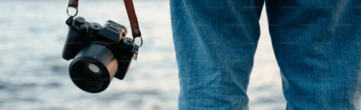
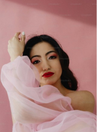
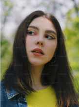

hotography is not just about capturing moments; it’s an art form that freezes
time, encapsulates emotions, and tells stories without words. Whether you are a professional
photographer, a budding amateur, or simply an appreciator of good images, photography offers an
accessible medium to express creativity, document reality, and explore the beauty of the world around
us.

At its core, photography is about perspective. It invites us to see the world
through different lenses, angles, and filters. From the majestic landscapes that stretch into the
horizon to the minutest details of urban street life, every photograph offers a new viewpoint and a
fresh take on the familiar.
A single image can speak volumes. It can evoke feelings of joy, sorrow,
wonder, and nostalgia. In the fast-paced world we live in, photographs serve as pauses, allowing us to
stop, reflect, and appreciate the fleeting moments that make up our lives. They connect us across time
and space, offering glimpses into other cultures, environments, and experiences.
With advancements in technology, photography continues to evolve. Today’s
cameras and editing software empower photographers to push boundaries and explore new creative realms.
High-definition images, breathtaking time-lapse videos, and powerful aerial shots captured by drones are
just the tip of the iceberg. The digital age has democratized photography, making it more accessible and
allowing more people to participate in the joy of creating visual art.


Photography is a journey of continuous learning. Whether mastering the
technical aspects of camera settings and lighting, or honing the artistic skills of composition and
color theory, there is always something new to discover. Workshops, online tutorials, and community
engagements provide avenues for growth and development, making photography an ever-evolving craft.
Photography connects us in a global tapestry of images that celebrate the
diversity and beauty of the world. By sharing our images and stories, we contribute to a larger
narrative that enriches our understanding and appreciation of the planet we share.
Whether you're capturing the gentle curve of a river, the sprawling chaos of
a cityscape, or the intimate glance between two people, photography offers endless possibilities to
explore and create. Embrace the journey, develop your unique vision, and keep sharing the world as you
see it through your lens.